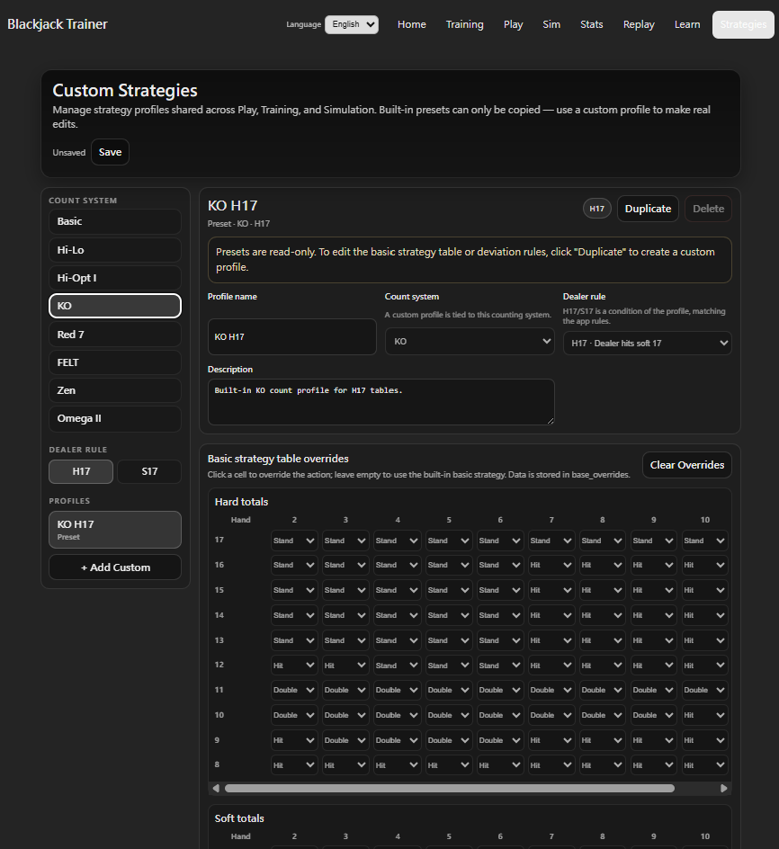
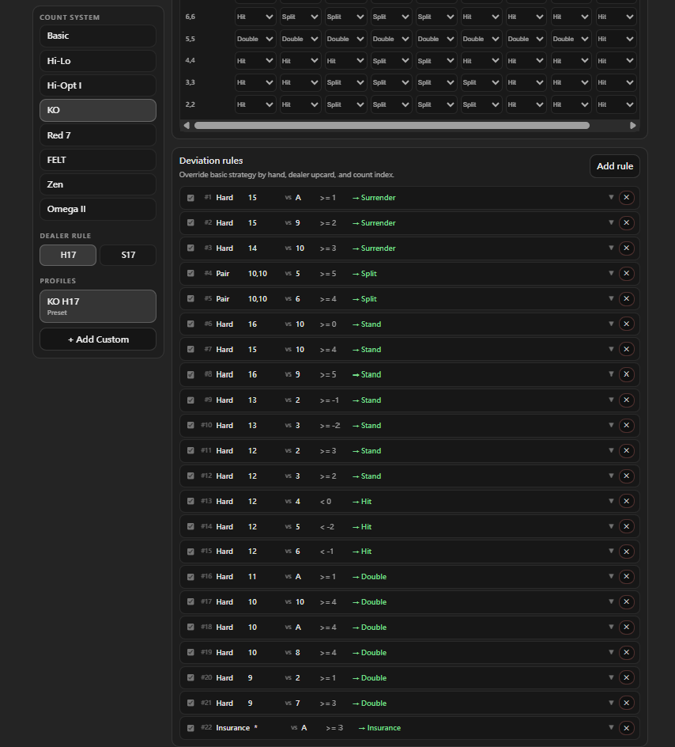

策略自訂
Strategies 是 PRO 版功能，讓使用者針對各算牌系統分別自訂 Basic Strategy Table 與 Deviation 規則集，並套用至 Play、Training 與 Simulation 的決策判斷。
Strategy Profile 總覽
頁面左側以算牌系統（Basic、Hi-Lo、KO、Red 7、FELT、Zen、Hi-Opt I、Omega II）與桌規（H17 / S17）兩個維度篩選，篩選結果顯示在下方 Profile 列表中。
App 內建一組 Preset Profile（每套系統各一份），Preset 內容不可修改。若要自訂，需點擊 Duplicate 複製一份，或點擊 + Add Custom 從空白新增，產生的 Custom Profile 才可以編輯、儲存與刪除。

Strategy Table 自訂
每個 Profile 包含一張 Basic Strategy Table，分 Hard Totals、Soft Totals、Pairs 三個區塊。橫軸為莊家明牌（2–10、A），縱軸為玩家手牌點數或牌型。每格顯示對應情況下的標準動作。
在 Custom Profile 中，可直接點擊任一格的下拉選單更改動作（Hit / Stand / Double / Split / Surrender）。已修改的格子會以金色標示以便識別。點擊 Clear Overrides 可一次清除所有覆寫，恢復基礎預設值。

Deviation 規則自訂
Profile 下方的 Deviation 區塊列出所有自訂規則，可新增、啟用 / 停用或刪除每條規則。每條規則包含：
- Hand Type：Hard / Soft / Pair / Insurance。
- Player value vs Dealer upcard：指定觸發條件的手牌與莊家明牌組合，支援萬用字元
*。 - Trigger：算牌訊號門檻（>= / > / <= / < + 數值）。均衡系統（Hi-Lo、FELT、Zen、Hi-Opt I、Omega II）以 True Count 為準；KO 與 Red 7 以 Running Count 為準。
- Action：訊號達到門檻時改採的動作（Hit / Stand / Double / Split / Surrender / Insurance）。
- 啟用 / 停用：個別控制每條規則是否納入判斷，不需要時停用而非刪除。
- Notes：自由備忘說明。
套用範圍
建立並儲存 Custom Profile 後，可在以下三個地方選用：
- Play 模式：在 Settings 為各席位選擇 Strategy Profile，Play 中的下注建議與決策對錯回饋將依照自訂的 Table 與 Deviation 規則判斷。
- Training — Decision Training：選擇 Strategy Profile 後，Deviation 題型依照自訂規則出題與判分，可集中練習自訂的偏離決策。
- Simulation（PRO）：在 Sim 設定中選擇 Strategy Profile，讓模擬依照自訂策略計算長期 EV 與 ROI，評估自訂規則的長期效益。
Strategies 為 PRO 版功能。FREE 版可以查看 Preset Profile 的內容，但無法新增 Custom Profile 或修改任何設定。